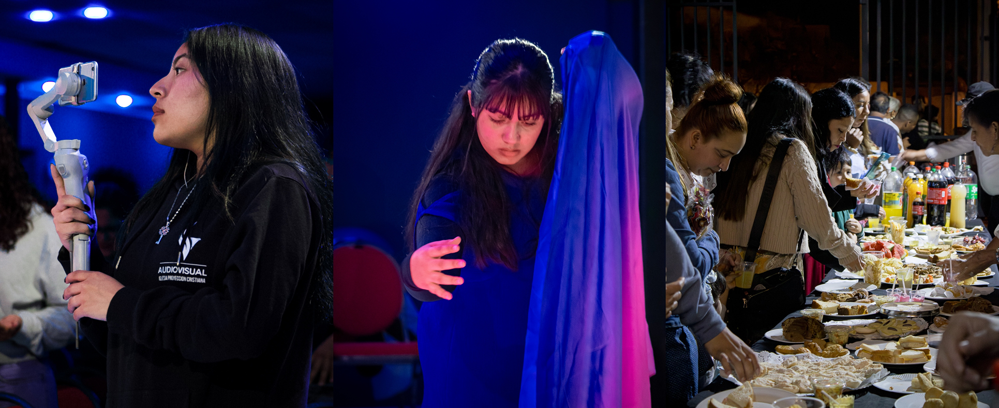

Sobre Nosotros
En IPROYEC creemos en el poder transformador del evangelio. Somos una comunidad que ama a Dios, sirve a las personas y forma discípulos comprometidos.

Bienvenidos a IPROYEC – Iglesia Proyección Cristiana. Somos una comunidad comprometida con la enseñanza de la Palabra, el servicio y el amor a nuestra ciudad. Te invitamos a conocer nuestros cultos, ministerios y actividades. Ven como eres y encuentra un lugar donde crecer en fe y en comunidad.
Conoce las principales áreas de la comunidad y los espacios que poco a poco se irán ampliando dentro del sitio web.
En IPROYEC creemos en el poder transformador del evangelio. Somos una comunidad que ama a Dios, sirve a las personas y forma discípulos comprometidos.
Conoce nuestras reuniones, retiros y actividades especiales que fortalecen la comunión y la vida espiritual de la iglesia.
Accede a enseñanzas bíblicas para tu vida diaria, contenidos en vivo y futuros recursos de apoyo para la congregación.
Contenido en vivoConoce los distintos grupos de nuestra iglesia, espacios diseñados para compartir, aprender, crecer en la fe y fortalecer los vínculos en comunidad.
Ver Grupos
Descubre cómo puedes usar tus dones y talentos para impactar vidas.
Quiero servirVisita nuestras reuniones y comparte con nosotros en comunidad.
Nuestra iglesia se encuentra ubicada en Av. Henríquez #771, Copiapó.
Cómo llegar 📍 1.png)
Tus diezmos y ofrendas permiten que el evangelio avance, que vidas sean restauradas y que nuevos proyectos sigan creciendo.
Ofrendar ahora